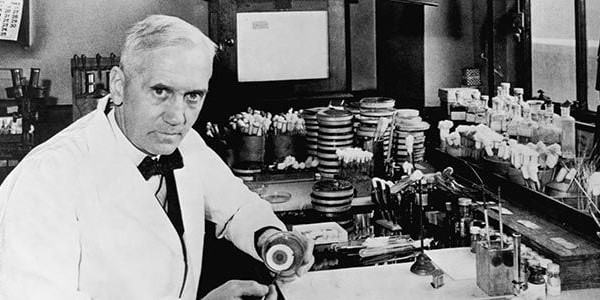

Throughout history many wars have been waged and fought resulting in billions of casualties for the human race as a whole, but the leading cause of casualties is not what many believe it might be. During the Civil-War two thirds of casualties were due to this factor and in World War I, one third of casualties were caused by the same thing, infections and disease. Without anything to stop such a devastating force that claimed so many lives, something had to be done not just on the battlefront but for the many suffering at home. In 1928, ten years after the end of the first World War, Alexander Fleming made the discovery of a mold with antibiotic properties that would change the way medicine was used forever. The mold he found was Penicillium chrysogenum, that would later be used to create the penicillin that we still use today. It was not until 1940, at the height of the German aerial attacks on England during World War II, when the mold was refined and tested by Howard Florey and the team of doctors and chemists he recruited at the Dunn School of Pathology in Oxford. They used mice infected with lethal doses of streptococci bacteria to test the newly refined antibiotic, these test results showed clear and what seemed to be miraculous results so they immediately prepared for production large enough to begin testing on humans. One year later in February of 1941, the first patient was a policeman in England, Albert Alexander, who had an infection from what some say was shrapnel from a bomb blast and others say a cut from a rose bush. Regardless of what had caused his wound the penicillin worked and cured his infection until he relapsed and died a month later. After this there were many more successful cases that convinced them to start supplying penicillin to the Allied soldiers on the battlefront. They observed the effects of the drug and noticed how greatly it was benefitting the recovering soldiers and saving many lives, especially against gonorrhea which was devastating soldiers in North Africa. With limited production being available at the time the Allies had to be strategic about where and who was getting the penicillin first, playing a crucial key into the war and its outcome. From then on penicillin was a staple in hospitals and the warfront, appearing in every war after in varying degrees, being used heavily in the wars right after World War II. Penicillin changed the way battles were fought and the way medicine was used in war, and on a larger scale changed the way infections were seen in the world as a whole, what used to be a cut that would kill someone in perfect health was nothing more than a scratch that could be treated with ease.